NCERT Solutions for Class 11 Chemistry Chapter 6 Thermodynamics
Topics and Subtopics in NCERT Solutions for Class 11 Chemistry Chapter 6 Thermodynamics:
| Section Name | Topic Name |
| 6 | Thermodynamics |
| 6.1 | Thermodynamic Terms |
| 6.2 | Applications |
| 6.3 | Measurement of ∆U and ∆H: Calorimetry |
| 6.4 | Enthalpy Change, ∆rH of a Reaction – Reaction Enthalpy |
| 6.5 | Enthalpies for Different Types of Reactions |
| 6.6 | Spontaneity |
| 6.7 | Gibbs Energy Change and Equilibrium |
NCERT Solutions Class 11 ChemistryChemistry Lab ManualChemistry Sample Papers
NCERT Class 11 Chemistry Textbook QUESTIONS SOLVED
Question 1. Choose the correct answer:
A thermodynamic state junction is a quantity
(i) used to determine heat changes
(ii) whose value is independent of path
(iii) used to determine pressure volume work
(iv) whose value depends on temperature only.
Answer: (ii) whose value is independent of path
Question 2. For the process to occur under adiabatic conditions, the correct condition is:
(i) ∆T= 0 (ii) ∆p = 0
(iii) q = 0 (iv) w = 0
Ans. (iii) q = 0
More Resources for CBSE Class 11
- NCERT Solutions
- NCERT Solutions Class 11 Maths
- NCERT Solutions Class 11 Physics
- NCERT Solutions Class 11 Chemistry
- NCERT Solutions Class 11 Biology
- NCERT Solutions Class 11 Hindi
- NCERT Solutions Class 11 English
- NCERT Solutions Class 11 Business Studies
- NCERT Solutions Class 11 Accountancy
- NCERT Solutions Class 11 Psychology
- NCERT Solutions Class 11 Entrepreneurship
- NCERT Solutions Class 11 Indian Economic Development
- NCERT Solutions Class 11 Computer Science
Question 3. The enthalpies of all elements in their standard states are : ‘
(i) unity (ii) zero
(iii) < 0 (iv) different for each element
Answer: (ii) zero
Question 4.
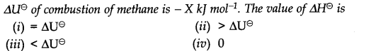
Answer:
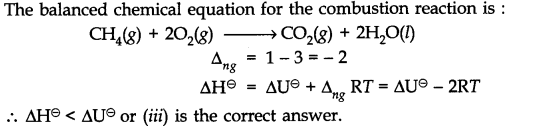
Question 5. The enthalpy of combustion of methane, graphite and dihydrogen at 298 K are -890.3 KJ mol-1, – 393.5 KJ mol-1 and – 285.8 KJ mol-1 respectively. Enthalpy of formation of CHJg) will be
(i) – 74.8 KJ mol-1 (ii) – 52.27 KJ mol-1
(iii) + 74.8 KJ mol-1 (iv) + 52.26 KJ mol-1
Answer: As per the available data :
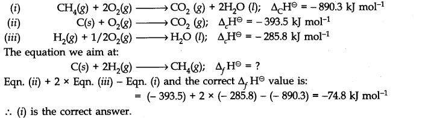
Question 6. A reaction, A + B—>C + D + q is found to have a positive entropy change. The reaction will be
(i) possible at high temperature (ii) possible only at low temperature
(iii) not possible at any temperature (iv) possible at any temperature
Answer: (iv) possible at any temperature
Question 7. In a process, 701 ] of heat is absorbed by a system and 394 J of work is done by the system. What is the change in internal energy for the process?
Answer: Heat absorbed by the system, q = 701 J Work done by the system = – 394 J Change in internal energy (∆U) = q + w = 701 – 394 = 307 J.
Question 8. The reaction of cyanamide,NH2CN(s) with dioxygen was carried out in a bomb calorimeter and ∆U was found to be -742,7 KJ-1 mol-1 at 298 K. Calculate the enthalpy change for the reaction at 298 K.NH2CN (S) + 3/202(g) —–>N2(g) + CO2(g) + H20(Z)
Answer: ∆U = – 742.7 KJ-1 mol-1 ; ∆ng = 2 – 3/2 = + 1/2 mol.
R = 8.314 x 10-3KJ-1 mol-1 ; T = 298 K
According to the relation,∆H = ∆U+∆ngRT
∆H = (- 742.7 kj) + (1/2 mol) x (8.314 x10-3 KJ-1 mol-1 ) x (298 K)
= – 742.7 kj + 1.239 kj = – 741.5 kj.
Question 9. Calculate the number of kj of heat necessary to raise the temperature of 60 g of aluminium from 35°C to 55°C. Molar heat capacity of Al is 24 J mol-1 K-1.
Answer: No. of moles of Al (m) = (60g)/(27 g mol-1) = 2.22 mol
Molar heat capacity (C) = 24 J mol-1 K-1.
Rise in temperature (∆T) = 55 – 35 = 20°C = 20 K
Heat evolved (q) = C x m x T = (24 J mol-1 K-1) x (2.22 mol) x (20 K)
= 1065.6 J = 1.067 kj
Question 10. Calculate the enthalpy change on freezing of 1.0 mol of water at 10.0°C to ice at – 10.0°C. A, H = 6.03 KJ mot1 at 0°C. Cp [H20(l)J = 75.3 J mol-1 K-1; Cp [H20(s)J = 36.8 J mol-1 K-1.
Answer: The change may be represented as:
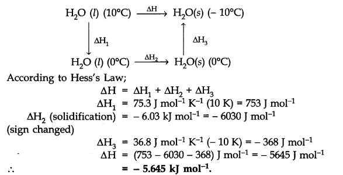
Question 11. Enthalpy of combustion of carbon to carbon dioxide is – 393.5 J mol-1 .Calculate the heat released upon formation of 35.2 g of C02 from carbon and oxygen gas.
Answer: The combustion equation is:
C(s) + 02 (g) —–> C02(g); AcH = – 393.5 KJ mol-1
Heat released in the formation of 44g of C02 = 393.5 kj
Heat released in the formation of 35.2 g of C02=(393.5 KJ) x (35.2g)/(44g) = 314.8 kj
Question 12. Calculate the enthalpy of the reaction:
N204(g) + 3CO(g) ———->N20(g) + 3CO2(g)
Given that;∆fH–CO(g) = – 110 kj mot-1; ∆fHC02(g) = – 393 kj mol-1
∆fHN20(g) = 81 kj mot-1; ∆fN2O4(g) = 9.7 kj mol-1
Answer: Enthalpy of reaction (∆r,H) = [81 + 3 (- 393)] – [9.7 + 3 (- 110)]
= [81 – 1179] – [9.7 – 330] = – 778 kj mol-1
Question 13. Given : N2(g) + 3H2(g) ————> 2NH3(g); ∆r H– = -92.4 kj mot-1 What is the standard enthalpy of formation of NH3 gas?
Answer: ∆H– NH3 (g) = – (92.4)/2 = – 46.2 kj mol-1
Question 14. Calculate the standard enthalpy of formation of CH3OH. from the following data:
(i) CH3OH(l) + 3/2 02 (g) ———-> CO2 (g) + 2H20 (l); ∆rH– = – 726kj mol-1
(ii) C(s) + 02(g) —————>C02 (g); ∆cH– = -393 kj mol-1
(iii) H2(g) + 1/202(g) —————->H20 (l); ∆fH– = -286 kj mol-1
Answer: The equation we aim at;
C(s) + 2H2(g) + l/202(g) ———> CH3OH (l);∆fH– = ±? … (iv)
Multiply eqn. (iii) by 2 and add to eqn. (ii)
C(s) + 2H2(g) + 202(g) ————->C02(g) + 2H20(Z)
∆H = – (393 + 522) = – 965 kj moH Subtract eqn. (iv) from eqn. (i)
CH3OH(Z) + 3/202(g) ————> C02(y) + 2H20(Z); ∆H = – 726 kj mol-1
Subtract: C(s) + 2H2(y) + l/202(g) ———-> CH3OH(Z); ∆fHe = – 239 kj mol-1
Question 15.
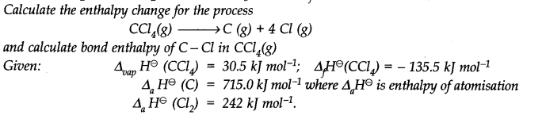
Answer:
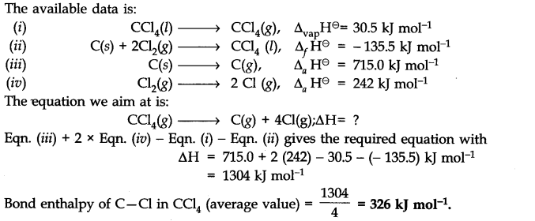
Question 16. For an isolated system∆U = 0; what will be ∆S?
Answer: Change in internal energy (∆U) for an isolated system is zero for it does not exchange any energy with the surroundings. But entropy tends to increase in case of spontaneous reaction. Therefore, ∆S > 0 or positive.
Question 17. For a reaction at 298 K
2A + B————->C
∆H = 40Q kj mot1 and AS = 0.2 kj Kr-1 mol-1.
At what temperature will the reaction become spontaneous considering ∆H and ∆S to be constant over the temperature range?
Answer: As per the Gibbs Helmholtz equation:
ΔG = Δ H- TΔ S For ΔG=0 ; ΔH=TΔS or T=ΔH/ΔS
T = (400 KJ mol-1)/(0.2 KJ K-1 mol-1) = 2000 k
Thus, reaction will be in a state of equilibrium at 2000 K and will be spontaneous above this temperature.
Question 18. For the reaction; 2Cl(g) ———-> Cl2(g); what will be the signs of ∆H and ∆S?
Answer: ∆H : negative (- ve) because energy is released in bond formation
∆S : negative (- ve) because entropy decreases when atoms combine to form molecules.
Question 19.
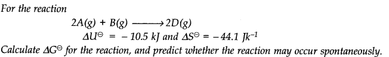
Answer:
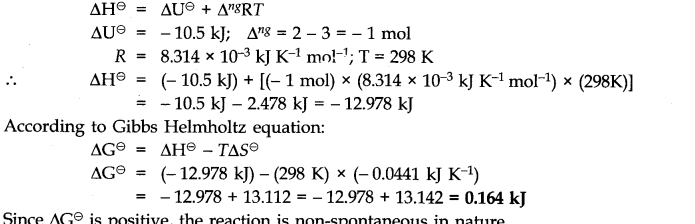
Question 20.
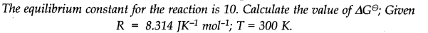
Answer:
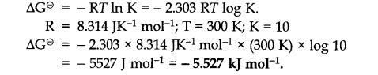
Question 21.
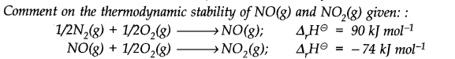
Answer:
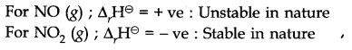
Question 22.
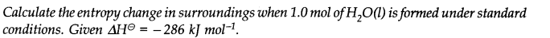
Answer:
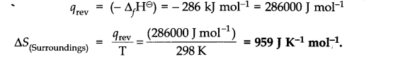
MORE QUESTIONS SOLVED
NCERT Solutions for Class 11 Chemistry Chapter 6 Very Short Answer Type Questions
Question 1. If ∆U = 0 how are q and w related to each other?
Answer: ∆U = q + w
Question 2. When is bond energy equal to bond dissociation energy ?
Answer: For diatomic molecules e.g. H2, O2, Cl2 etc. both energies are equal.
Question 3. What is the enthalpy of formation of the most stable form of an element in its standard state?
Answer: It is zero.
Question 4. Out of diamond and graphite, which has greater entropy?
Answer: Graphite has greater entropy since it is loosely packed.
Question 5. At what temperature entropy of a substance is zero?
Answer: At absolute zero.
Question 6. From thermodynamic point of view, to which system the animals and plants belong?
Answer: Open system.
Question 7. Predict the sign of ∆S for the following reaction heat
CaCO3 (s) ———> CaO(s) + CO2(g)
Answer: ∆S is positive.
Question 8. State Hess’s law.
Answer: The change of enthalpy of a reaction remains same whether the reaction is carried out in one step or several steps.
∆H = ∆H1 + ∆H2 + ∆H3……………
Question 9. What is the enthalpy change for an adiabatic process?
Answer: For an adiabatic process,∆H = 0
Question 10. What do you mean by entropy?
Answer: Entropy is a measure of randomness of a system.
Question 11. Give a relation between entropy change and heat absorbed or evolved for a reversible reaction occurring at temperature T.
Answer: ∆s = qrev/T
Question 12. What is the condition for spontaneity in terms of free energy change?
Answer: If ∆G is negative, process is spontaneous.
If ∆G is positive, the process is non-spontaneous.
If ∆G = 0, the process is in equilibrium.
Question 13. What is an adiabatic process?
Answer: The process in which no exchange of heat takes place between the system and the surroundings.
Question 14. What is free energy in terms of thermodynamics?
Answer: Free energy of a system is the capacity to do work.
G = H-T∆S
Question 15. Define extensive properties.
Answer: Properties which depend upon the amount of the substance are called as extensive properties.
Question 16. How are internal energy change, free energy change and entropy change are related to one another?
Answer: ∆G = ∆H – T∆S (At constant pressure)
Question 17. How is entropy of a substance related to temperature?
Answer: On increasing temperature, entropy of a substance increases.
Question 18. Define intensive properties.
Answer: Properties which depend on the nature of the substance and not on the amount of the substance are called intensive properties.
Question 19. What is Gibbs Helmholtz equation?
Answer: ∆G = ∆H – T∆S
Where ∆G = free energy change.
∆H = enthalpy change.
∆S = entropy change.
Question 20. What are the units of entropy?
Answer: SI unit of ∆S =JK-1mol-1 .
Question 21. What is a spontaneous change? Give one example.
Answer: A process which can take place of its own or initiate under some condition.
For example: Common salt dissolves in water of its own.
NCERT Solutions for Class 11 Chemistry Chapter 6 Short Answer Type Questions
Question 1. When liquid benzene is oxidised at constant pressure at 300 K, the change in enthalpy is -3728 kJ. What is the change in internal energy at the same temperature?
Answer: The chemical equation representing the oxidation of liquid benzene is :
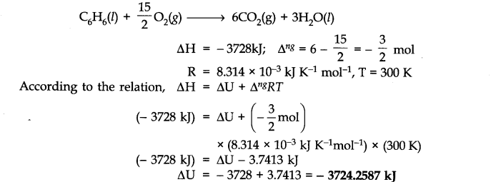
Question 2. The enthalpy of formation of methane at constant pressure and 300 K is – 78.84 kJ. What will be the enthalpy of formation at constant volume?
Answer: The equation representing the enthalpy of formation of methane is:
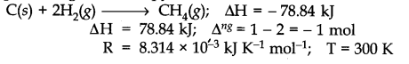
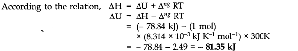
Question 3. Calculate the enthalpy change for the reaction: H2(g) + Cl2(g) ————-> 2HCl(g). Given that bond energies ofH-H, Cl- Cl and H-Cl bonds are 433, 244 and 431 kj mol-1 respectively.
Answer: The chemical equation for the reaction is:
H2(g) + Cl2(g) ———-> 2HCl(g)
The enthalpy of reaction is:
∆rH =∑B.E. of reactants – ∑B.E. of products= [B.E. of H-H bond + B.E. of Cl-Cl bond]
– [2 x B.E. of H—Cl bond]
= (433 + 244) – (2 x 431) = 433 + 244 – 862 = -185 kj
Question 4. The bond enthalpy of H2(g) is 436 kj mol-1and that of N2 (g) is 941.3 kj mol-1. Calculate the average bond enthalpy of an N-H bond in ammonia. Given: ∆H– (NH3) = -46 kj mol-1
Answer:
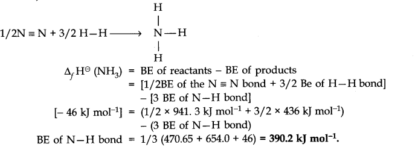
Question 5.When two moles of C2H6(g) are burnt, 3129 kj of heat is liberated. Calculate the heat of formation of C2H6(g). ∆fH for C02(g) and H20(l) are-393.5 and -286 kj mol-1 respectively.
Answer:
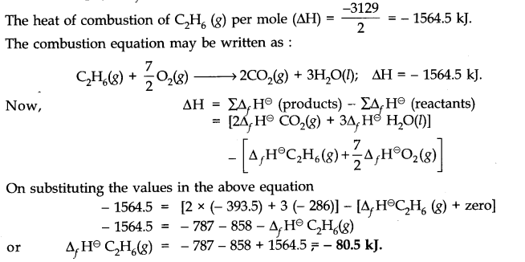
Question 6.
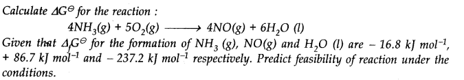
Answer:
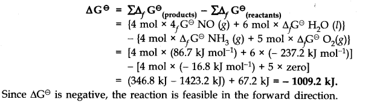
Question 7.
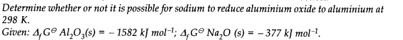
Answer:
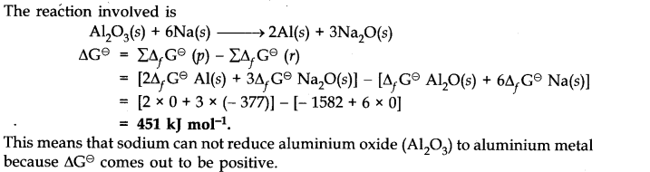
Question 8. 1 g of graphite is burnt in a bomb calorimeter in excess of oxygen at 298 K and 1 atmospheric pressure according to the equation C(graphite) + 02 (g) —> C02 (g) During the reaction, temperature rises from 298 K to 299 K. If the heat capacity of the bomb calorimeter is 20.7 kJ/K, what is the enthalpy change for the above reaction at 298 K and 1 atm?
Answer: Suppose q is the quantity of heat from the reaction mixture and Cv is the heat capacity of the calorimeter, then the quantity of heat absorbed by the calorimeter.
q = Cv/∆T
Quantity of heat from the reaction will have the same magnitude but opposite sign because the heat lost by the system (reaction mixture) is equal to the heat gained by the calorimeter.
q = – Cv x ∆T= – 20.7 kJ/ K x (299 – 298) K . = – 20.7 kJ
(Here, negative sign indicates the exothermic nature of the reaction). Thus, AU for the combustion of the lg of graphite = – 20.7 kj K-1 For combustion of 1 mol of graphite,
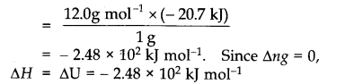
Question 9.
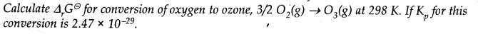
Answer:
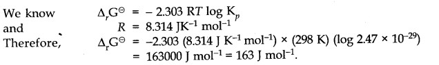
Question 10. Define the following:
(i) First law of thermodynamics.
(ii) Standard enthalpy of formation.
Answer: (i) First law of thermodynamics: It states that energy can neither be created nor be destroyed. The energy of an isolated system is constant.
∆u = q + w
(ii) It is defined as the amount of heat evolved or absorbed when one mole of the compound is formed from its constituent elements in their standard states.
Question 11.
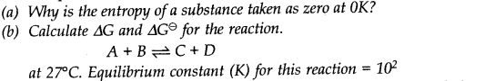
Answer:
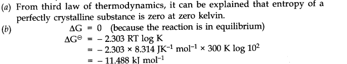
Question 12. Give reason for the following:
(a)Neither q nor w is a state function but q + w is a state function.
(b)A real crystal has more entropy than an ideal crystal.
Answer: (a) q + w = ∆u
As ∆u is a state function hence, q + w is a state function.
(b) A real crystal has some disorder due to the presence of defects in its structural arrangement whereas ideal crystal does not have any disorder. Hence, a real crystal has more entropy than an ideal crystal.
Question 13.
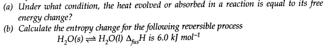
Answer:
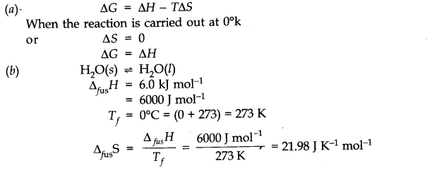
NCERT Solutions for Class 11 Chemistry Chapter 6 Long Answer Type Questions
Question 1. (a)What is a spontaneous process? Mention the conditions for a reaction to be spontaneous at constant temperature and pressure.
(b) Discuss the effect of temperature on the spontaneity of an exothermic reaction.
Answer: (a) A process is said to be spontaneous if it takes place by itself by own or under some condition.
∆G gives a criteria for spontaneity at constant temperature and pressure.
(b) If the temperature is so high that T∆S > ∆H in magnitude, ∆G will be positive and the process will be non-spontaneous.
If the temperature is made low so that T∆S < ∆H in magnitude, ∆G will be negative and the process will be spontaneous.
Question 2. Predict in which of the following, entropy increases/decreases.
(i) A liquid crystallizes into a solid
(ii) Temperature of a crystallize solid is raised from OK to 115 K
(iii) 2NaHCO3 (s) ———-> Na2 C03 (s) + C02 (g) + H2O (g)
(iv) H2(g)——>2H(g)
Answer: (i) After freezing, the molecules attain an ordered state and therefore, entropy decreases.
(ii) At 0 K the constituent particles are in static form therefore, entropy is minimum. If the temperature is raised to 115 K particles begin to move and entropy increases.
(iii) Reactant, NaHCO3 is solid. Thus, its entropy is less in comparison to product which has high entropy.
(iv) Here, one molecule gives two atoms. Thus, number of particles increases and this leads to more disordered form.
Question 3. Why standard entropy of an elementary substance is not zero whereas standard enthalpy of formation is taken as zero?
Under what conditions will the reaction occur, if
(i) both ∆H and ∆S are positive
(ii) both ∆H and ∆S are negative
Answer: (a) A substance has perfectly ordered arrangement of its constituent particles only at absolute zero. When the element formed from itself, this means no heat change.
Thus,∆f H = 0
(i) If both AH and AS are positive ∆G can be – ve only if T∆S > ∆H in magnitude. Thus, the temperature should be high.
(ii) If both AH and AS are negative ∆G can be negative only if T∆S < ∆H in magnitude. Thus, the value of T should be low.
Question 4. (a) What is bond energy? Why is it called enthalpy of atomisation?
(b) Calculate the bond energy of C-H bond, given that the heat of formation of CH4, heat of sublimation of carbon and heat of dissociation of H2 are – 74.8, + 719.6, 435.4 kj mol-1 respectively.
Answer: (a) Bond energy is the amount of energy required to dissociate one mole of bonds present between the atoms in the gaseous phase. As the molecules dissociate completely into atoms in the gaseous phase therefore bond energy of a diatomic molecule is called enthalpy of atomisatioij.
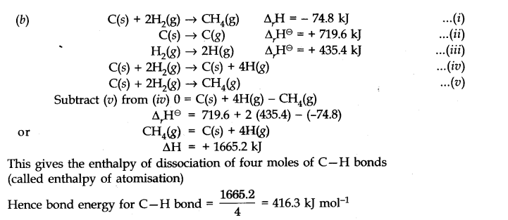
NCERT Solutions for Class 11 Chemistry Chapter 6 Multiple Choice Questions
Question 1. Thermodynamics is applicable to
(a) macroscopic system only (b) microsopic system only
(c) homogeneous system only (d) heterogeneous system only
Question 2. An isochoric process takes place at constant
(a) temperature (b) pressure
(c) volume (d) concentration
Question 3. For a cyclic process, the change in internal energy of the system is
(A) always +ve (b) equal to zero
(c) always -ve (d) none of the above
Question 4. Which of the following properties is not a function of state?
(a) concentration (b) internal energy
(c) enthalpy (d) entropy
Question 5. Which of the following relation is true?
Question 6. Which of the following always has a negative value?
(a) heat of reaction (b) heat of solution
(c) heat of combustion (d) heat of formation
Question 7. The bond energy depends upon
(a) size of the atom (b) electronegativity
(c) bond length (d) all of the above
Question 8. For an endothermic reaction.
(a) ∆H is -ve (b) ∆H is +ve
(c) ∆H is zero (d) none of these
Question 9. The process depicted by the equation.
H2O (S) ——> H2O (l) ∆H = +1.43 kcal represents
(a) fusion (b) melting
(c) evaporation (d) boilirtg
Question 10.Which one is the correct unit for entropy?
(a) KJ mol (b)JK mol
(c)JK mol-1 (d) KJ mol-1
Answer: 1. (a) 2. (c) 3. (b) 4. (a) 5. (a)
6. (c) 7. (d)8. (b) 9. (a) 10. (c)
NCERT Solutions for Class 11 Chemistry Chapter 6 HOTS Questions
Question 1. Why standard entropy of an elementary substance is not zero whereas the standard enthalpy of formation is taken as zero?
Answer: A substance has a perfectly ordered arrangement only at absolute zero. Hence, entropy is zero only at absolute zero. Enthalpy of formation is the heat change involved in the formation of one mole of the substance from its elements. An element formed from its constituents means no heat change.
Question 2.
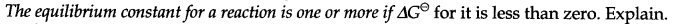
Answer:
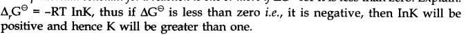
Question 3. Many thermodynamically feasible reactions do not occur under ordinary conditions. Why?
Answer: Under ordinary conditions, the average energy of the reactants may be less than the threshold energy. They require some activation energy to initiate the reaction.